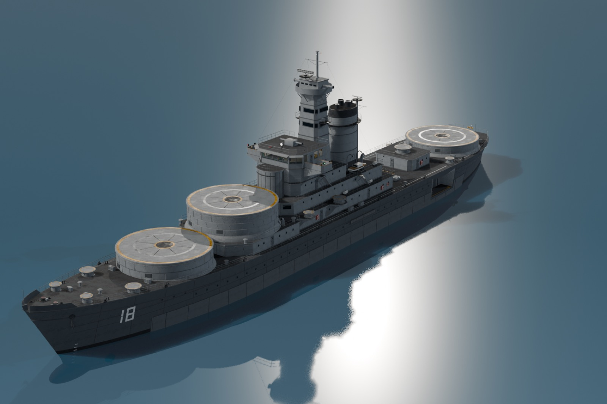
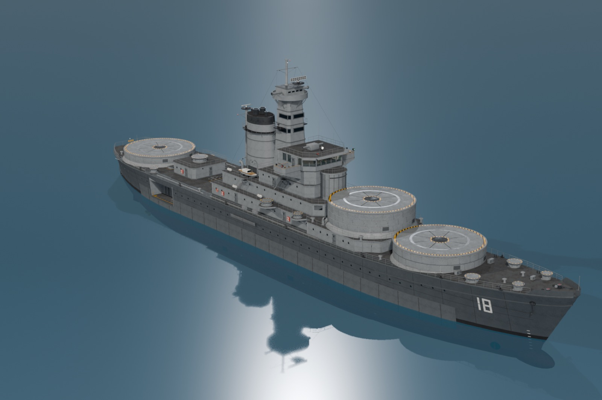
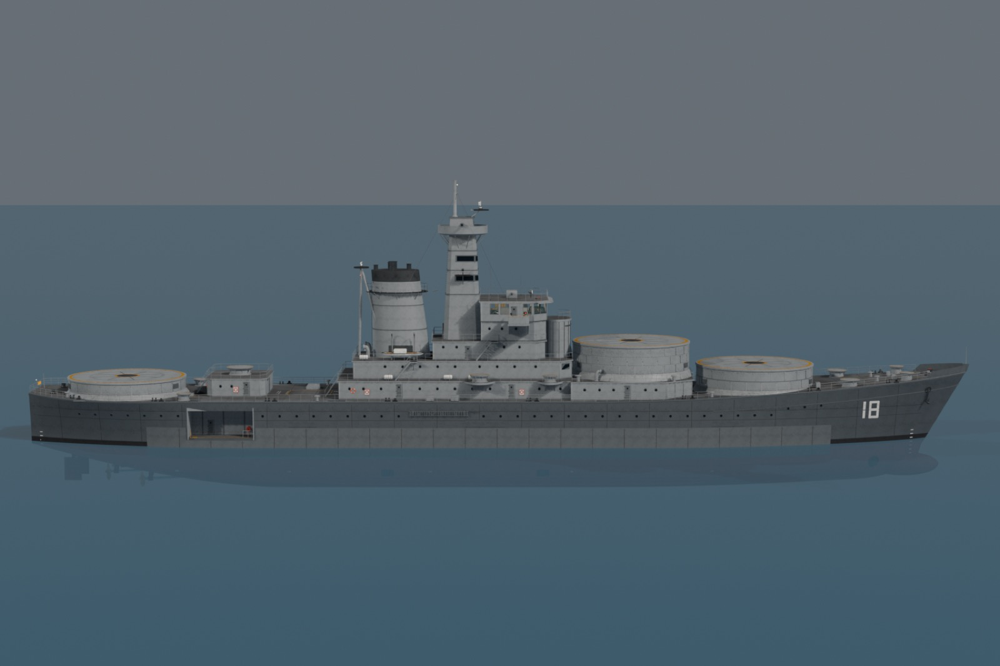

Runners · Player ships
Battleship
Runners is in development. Details will change.
Final Claude Opus v1 Approved 2026-11-15
The heaviest hitter: three main-gun barbettes and the strongest hull. The slowest Hunter and the dearest ship in the game.






Her sheet
- Class
- Hunter
- Level
- 5
- Size
- 136 m long, 20 m beam
- Containers on deck
- 2 × 20 ft
- Pallet places
- 3
- Below deck
- Stores hold, 50 units
- Weapon mounts
- 14: 6 small, 4 medium, 1 large, 3 main-gun barbette
- Loot nets
- one boom each side. No scrap magnet
- Speed / hull
- 32 m/s, 3000 HP
- Price
- 45,000 CR
How she works
- Cargo: 2 × 20 ft containers on marked deck spots and 3 pallets on deck. A crane at the berth lifts cargo on and off from above; nothing rolls on.
- Below deck: stores hold, 50 units. A deck hatch opens onto it and the crane works straight down through the hatch.
- Loot: sunk pirates leave pallets floating, each with a random load. A net boom on each side swings out over the water and scoops a pallet up as she drives past. It lands on one of her 3 pallet places, so a full deck takes no more. She has no magnet, so she cannot lift scrap.
- Fighting: 14 weapon mounts (6 small, 4 medium, 1 large, 3 main-gun barbette). The player buys and fits the guns; each one trains and fires on its own pad.
- Handling: 32 m/s top speed, 3000 hull points.
Ideas for her
Proposals, not decided yet.
- Proposal: Main-gun barbettes on the centreline, heavy armour belt and a tall fighting top.
- Proposal: a magazine hatch beside the weapon pads, where ammunition pallets are struck below deck.
Her story
Her story has not been written yet.
From the World Atlas
The heaviest hitter: three main-gun barbettes and the strongest hull. The slowest Hunter and the dearest ship in the game.
Below deck: Stores hold, 50 units; Loot nets: one boom each side. No scrap magnet
World Atlas, Runners 2055: the ships